第十三届环境类专业工程教育教学改革研讨会
分会场6 · 产出导向的内部评价机制建设与运行 · 专题报告
穿越周期：产出导向的四种非标新出口——门户·故事云·智能体·个人IP
分享人：点暇斋（黄正文）教授 · 成都大学环境工程系 | 16页PPT | 在线浏览+PDF/PPT下载
P1 · 封面
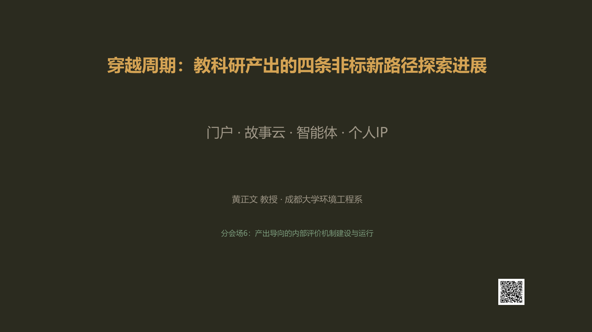
穿越周期：教科研产出的四条非标新路径探索进展 —— 门户·故事云·智能体·个人IP
扫码：HuangZhengwen.html
P2 · 分享与讨论
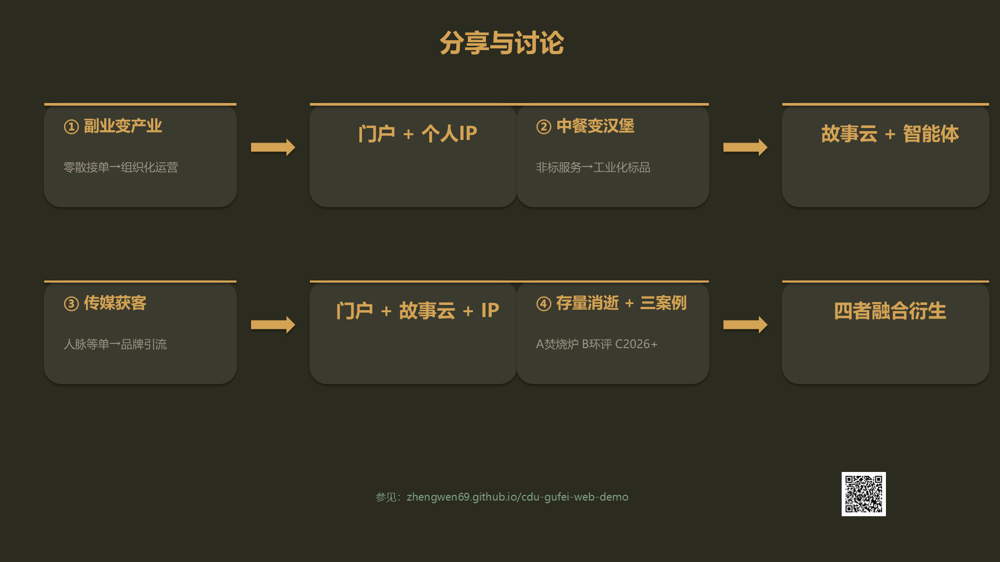
四大问题对位八卡片：副业变产业 / 中餐变汉堡 / 传媒获客 / 存量消逝+三案例，右侧对应四条非标新出口
首页：zhengwen69.github.io/cdu-gufei-web-demo
P3 · 探索中：四条非标新路径
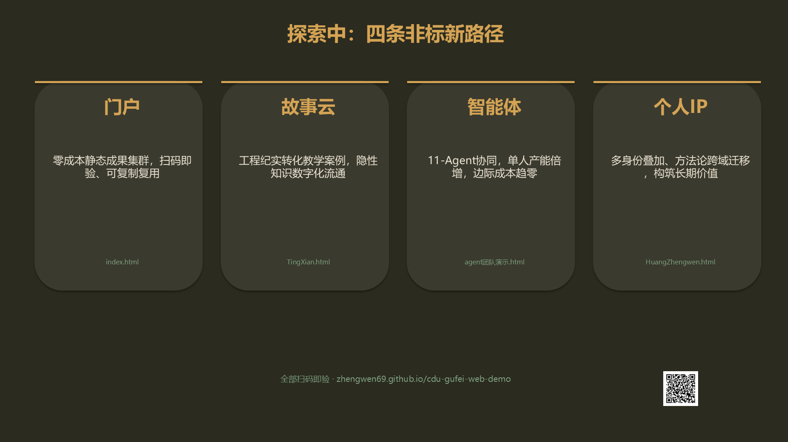
四张横向卡片：门户（扫码即验）· 故事云（隐性知识数字化）· 智能体（单人产能倍增）· 个人IP（跨域迁移）
门户：index.html | 故事云：TingXian.html | 智能体：agent团队演示.html | 个人IP：HuangZhengwen.html
P4 · 第一章：副业变产业
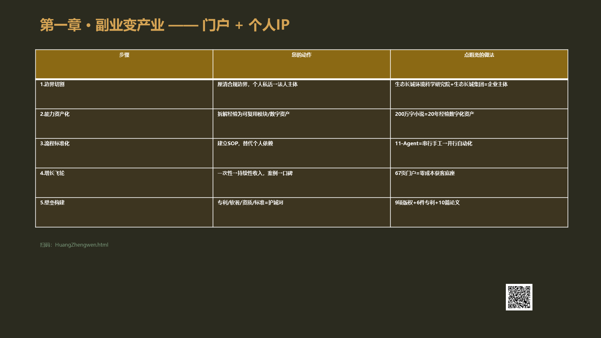
五步解题路径表：边界切割 → 能力资产化 → 流程标准化 → 增长飞轮 → 壁垒构建
HuangZhengwen.html
P5 · 案例A：医疗垃圾焚烧炉
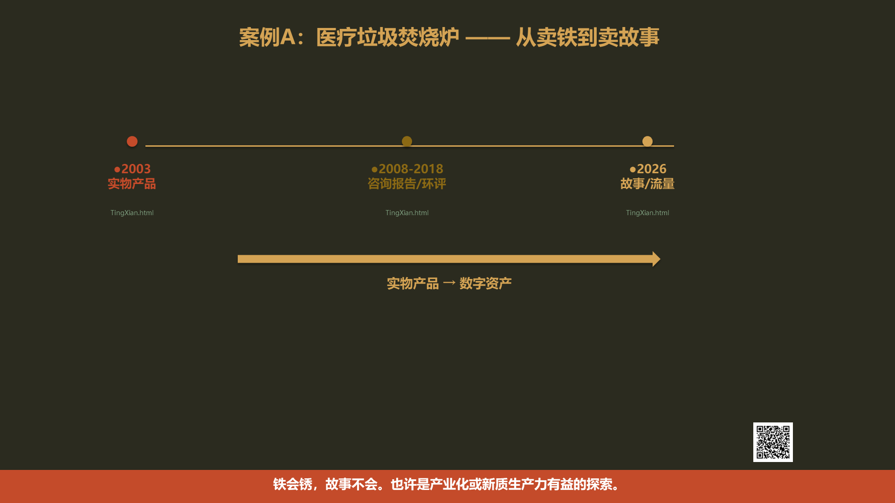
三节点时间轴：2003实物产品 → 2008-2018咨询报告 → 2026故事/流量。铁会锈，故事不会。
TingXian.html
P6 · 第二章：中餐变汉堡
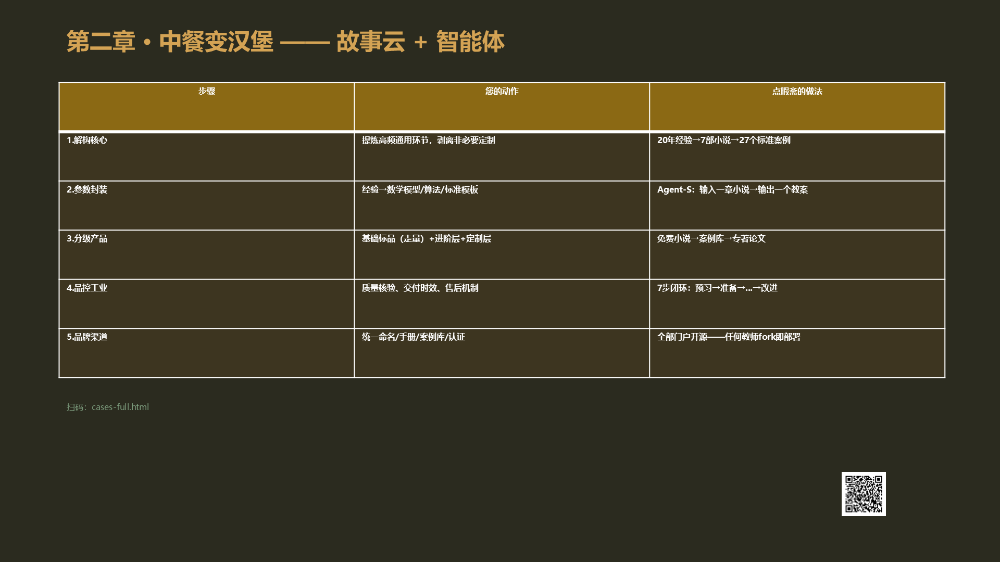
五步路径表：解构核心 → 参数封装 → 分级产品 → 品控工业 → 品牌渠道
cases-full.html
P7 · 案例B：环评"串串香模式"盈利重构
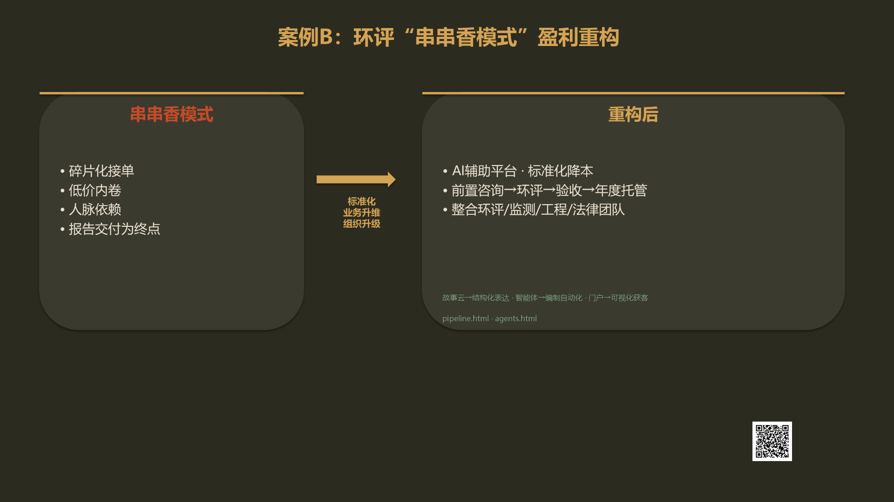
左卡（串串香模式）→ 右卡（重构后）。标准化降本 + 业务升维 + 组织升级
pipeline.html · agents.html
P8 · 第三章：传媒获客
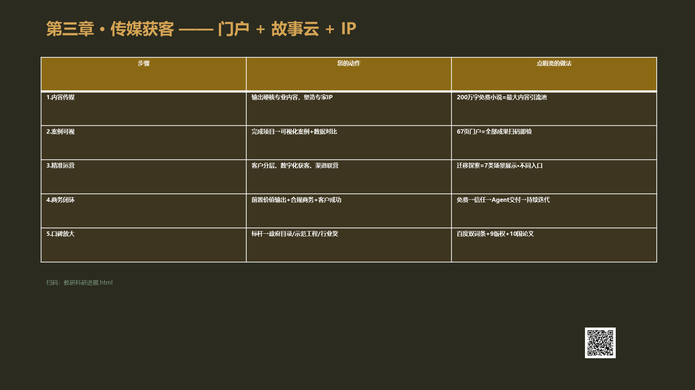
五步路径：内容传媒 → 案例可视 → 精准运营 → 商务闭环 → 口碑放大
教研科研进展.html
P9 · 第四章：存量消逝后
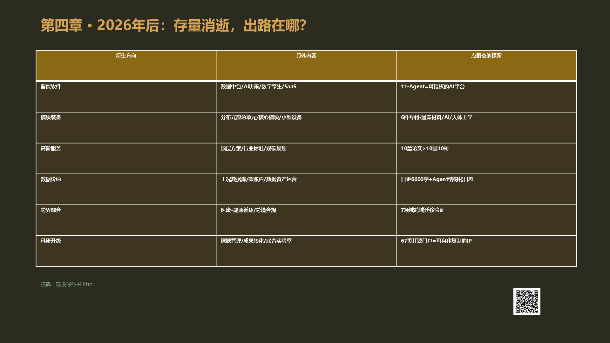
六大衍生方向：智能软件 / 模块装备 / 高阶服务 / 数据价值 / 跨界融合 / 科研升级
建设任务书.html
P10 · 案例C：当A和B都消逝了
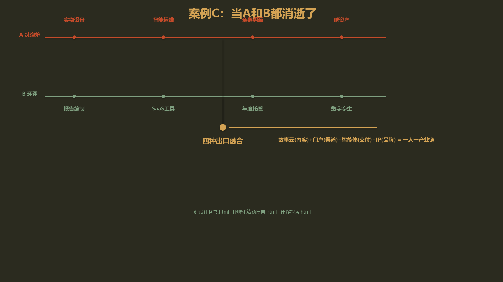
A（焚烧炉）演化链 + B（环评）演化链 → 汇聚融合：四种出口 = 一人一产业链
建设任务书.html · IP孵化结题报告.html · 迁移探索.html
P11 · 第五章：再说教改回到师生
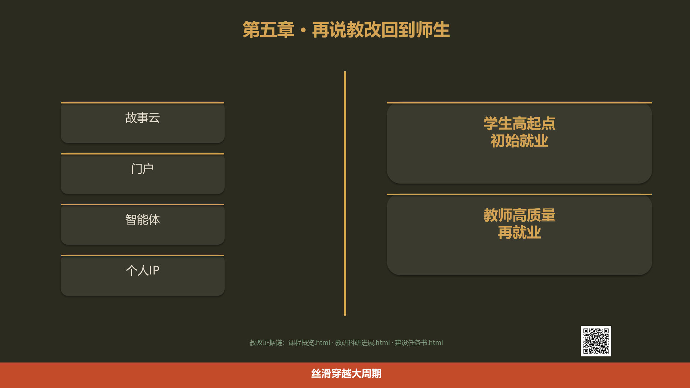
术道双塔：故事云/门户/智能体/个人IP（术）→ 学生高起点初始就业 + 教师高质量再就业（道）
课程概览.html · 教研科研进展.html · 建设任务书.html
P12 · 学生：从生手到熟手
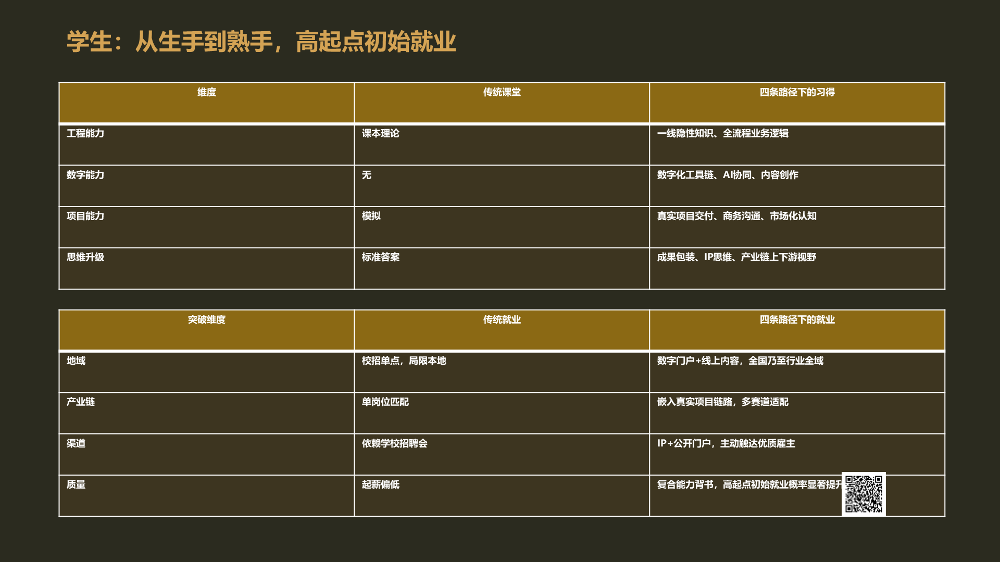
能力维度表 + 就业增益表：地域突破 / 产业链覆盖 / 渠道拓宽 / 实践赋能 / 质量抬升
cases-full.html
P13 · 老师：两袖清风→一枚咸鸭蛋
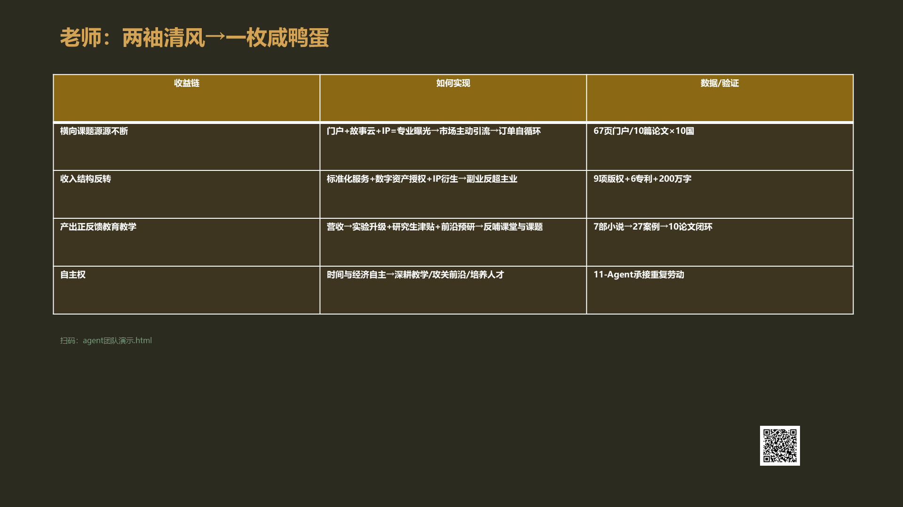
收益闭环四链：横向课题源源不断 / 收入结构反转 / 产出正反馈教育教学 / 自主权
agent团队演示.html
P14 · 师生双向穿越周期的闭环
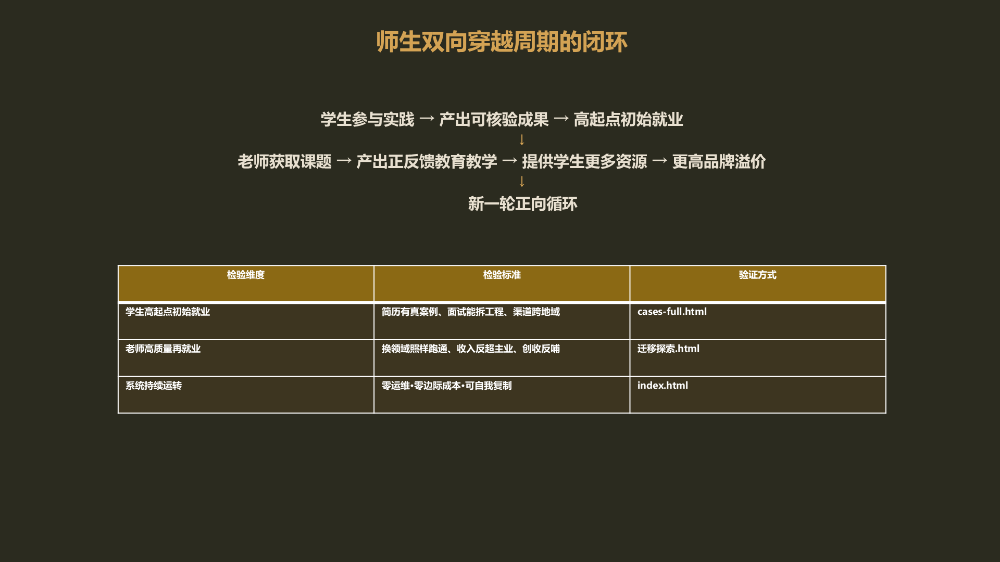
学生参与→初始就业→老师获课题→产出正反馈教育教学→正向循环。三行检验表
index.html
P15 · 一页收束：四大问题×四条路径
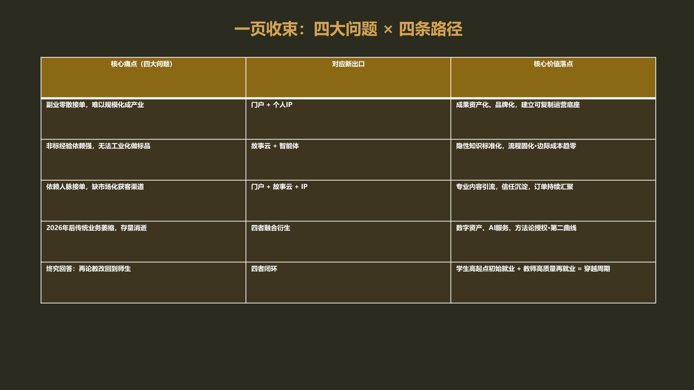
五收束行对照表：副业变产业/中餐变汉堡/传媒获客/存量消逝/终究回答：再论教改回到师生
扫码即验全部：index.html
P16 · 封底金句
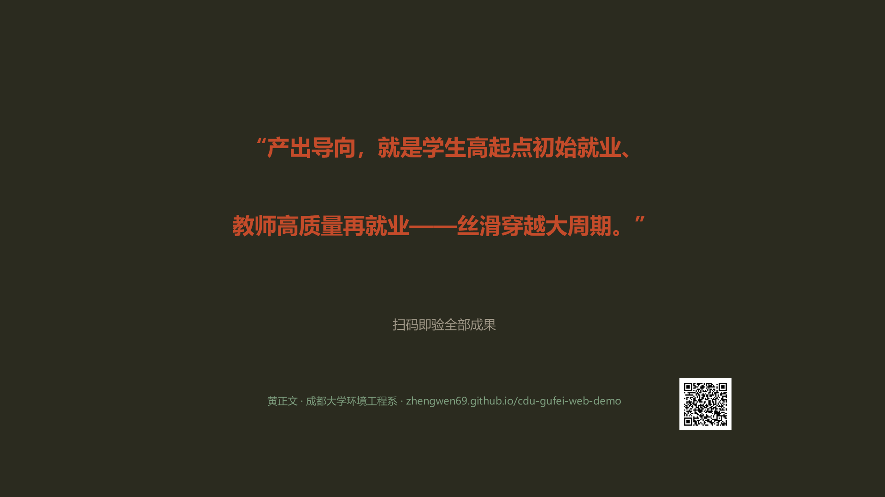
"产出导向，就是学生高起点初始就业、教师高质量再就业——丝滑穿越大周期。"
zhengwen69.github.io/cdu-gufei-web-demo